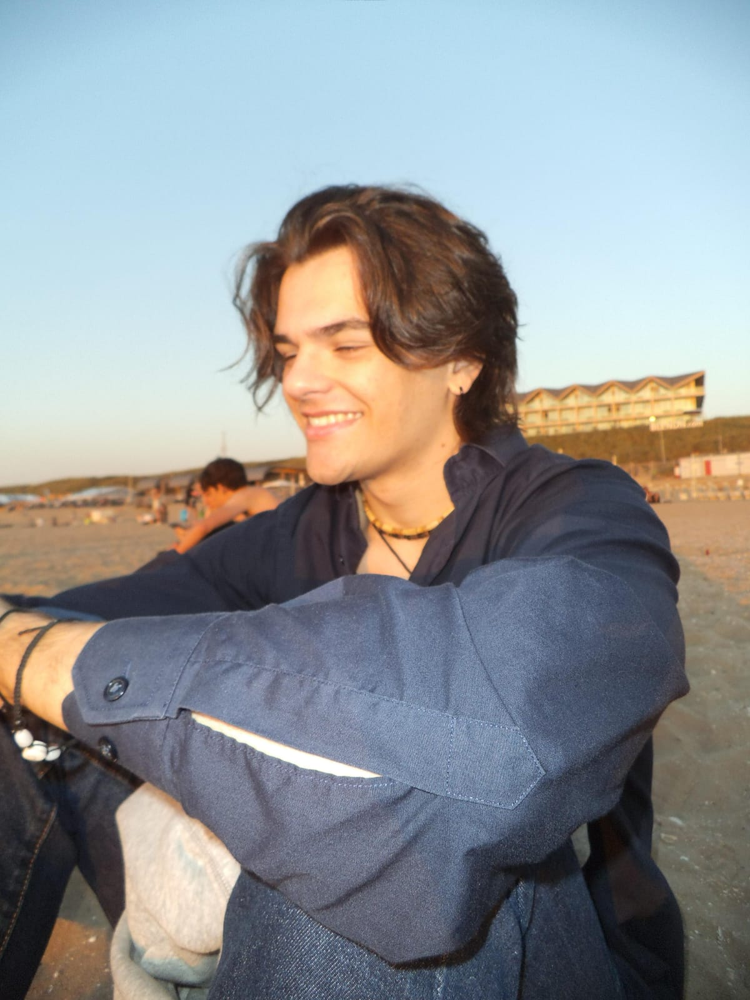

Game Developer & Software Engineer
I build games_
Canary Islands, Spain

Hi, I'm Hugo Jimenez Barrasa, a 19-year-old dreamer and game developer from the Canary Islands, Spain. My love story with game development began when I was just 7 years old. I wasn't just playing games I was envisioning worlds, mechanics, and stories of my own. From that moment, I knew creating games wasn't just a hobby for me; it was my calling.
Since then, I've dedicated myself to this craft, diving deep into game design and development with an insatiable curiosity. I've spent countless hours experimenting, learning, and bringing my own projects to life. Every challenge I've faced has fueled my determination, and every success has amplified my passion. Game development isn't just what I do it's who I am.
Currently, I'm pursuing a degree in IT at Inholland University of Applied Sciences in the Netherlands, where I'm building a strong foundation in programming, design, and technology. I'm committed to honing my craft and contributing to innovative, impactful projects that push the boundaries of what games can achieve.
I have a solid foundation in information technology and I am currently pursuing my degree at Inholland University of Applied Sciences in the Netherlands. Over the past few years, I've immersed myself in various development projects, mastering programming languages such as C#, Java, and Python. My proficiency extends to working with game engines like Unity, Unreal Engine, and Godot, enabling me to bring creative worlds, characters, and stories to life. This journey has equipped me with a comprehensive understanding of both the technical and creative aspects of game development, which I am highly motivated to continue perfecting.
In my free time, I enjoy staying updated on developments in game engines and learning new programming languages. I consider video games to be the finest expression of art, seamlessly blending storytelling, art, and experiences. Playing games not only provides entertainment but also inspires my own creativity.
While I haven't yet had the opportunity to participate in a game jam due to academic commitments, I am eager and excited to engage in such collaborative projects in the future.
I have a profound interest in digital art and have been drawing and creating art for as long as I can remember. Recently, I've begun exploring 3D modeling to expand my artistic skill set.
Writing and storytelling have always been strengths of mine, with teachers and family consistently praising my abilities in these areas. Cinema and cinematography have been significant sources of inspiration since my childhood, fueling my desire to incorporate rich narratives and visual storytelling into the games I develop. Additionally, I have a deep love for reading fiction and philosophy, finding inspiration in exploring diverse worlds and ideas. I aspire to infuse these literary influences into my game development projects, creating immersive and thought-provoking experiences.
Beyond my creative pursuits, I am passionate about gymnastics and surfing. Engaging in gymnastics has instilled discipline, precision, and a strong work ethic, while surfing has taught me patience, adaptability, and resilience. These activities not only keep me physically active but also contribute to my mental well-being and provide fresh perspectives that I bring into my projects.
This blend of technical curiosity, artistic expression, and physical activity shapes my holistic approach to life and game development.